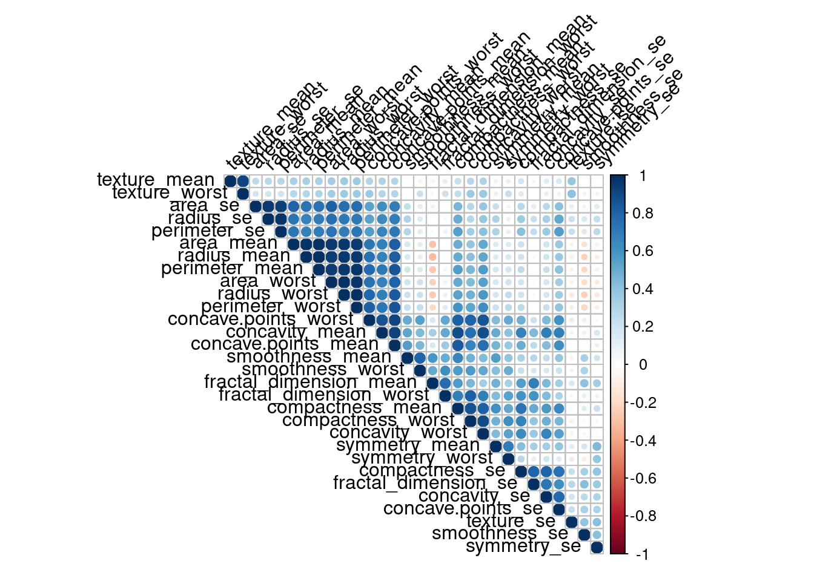

Chapter 2 Introduction
The machine learning algorithms were trained to detect breast cancer using the Wisconsin Diagnostic Breast Cancer (WDBC) dataset[20]. The dataset consists of features which were computed from a digitized image of a fine needle aspirate (FNA) of a breast mass. The said features describe the characteristics of the cell nuclei found in the image.
2.1 Description of the data
dat <- read.csv("data/WBCD_data.csv")
knitr::kable(head(dat))| id | diagnosis | radius_mean | texture_mean | perimeter_mean | area_mean | smoothness_mean | compactness_mean | concavity_mean | concave.points_mean | symmetry_mean | fractal_dimension_mean | radius_se | texture_se | perimeter_se | area_se | smoothness_se | compactness_se | concavity_se | concave.points_se | symmetry_se | fractal_dimension_se | radius_worst | texture_worst | perimeter_worst | area_worst | smoothness_worst | compactness_worst | concavity_worst | concave.points_worst | symmetry_worst | fractal_dimension_worst | X |
|---|---|---|---|---|---|---|---|---|---|---|---|---|---|---|---|---|---|---|---|---|---|---|---|---|---|---|---|---|---|---|---|---|
| 842302 | M | 17.99 | 10.38 | 122.80 | 1001.0 | 0.11840 | 0.27760 | 0.3001 | 0.14710 | 0.2419 | 0.07871 | 1.0950 | 0.9053 | 8.589 | 153.40 | 0.006399 | 0.04904 | 0.05373 | 0.01587 | 0.03003 | 0.006193 | 25.38 | 17.33 | 184.60 | 2019.0 | 0.1622 | 0.6656 | 0.7119 | 0.2654 | 0.4601 | 0.11890 | NA |
| 842517 | M | 20.57 | 17.77 | 132.90 | 1326.0 | 0.08474 | 0.07864 | 0.0869 | 0.07017 | 0.1812 | 0.05667 | 0.5435 | 0.7339 | 3.398 | 74.08 | 0.005225 | 0.01308 | 0.01860 | 0.01340 | 0.01389 | 0.003532 | 24.99 | 23.41 | 158.80 | 1956.0 | 0.1238 | 0.1866 | 0.2416 | 0.1860 | 0.2750 | 0.08902 | NA |
| 84300903 | M | 19.69 | 21.25 | 130.00 | 1203.0 | 0.10960 | 0.15990 | 0.1974 | 0.12790 | 0.2069 | 0.05999 | 0.7456 | 0.7869 | 4.585 | 94.03 | 0.006150 | 0.04006 | 0.03832 | 0.02058 | 0.02250 | 0.004571 | 23.57 | 25.53 | 152.50 | 1709.0 | 0.1444 | 0.4245 | 0.4504 | 0.2430 | 0.3613 | 0.08758 | NA |
| 84348301 | M | 11.42 | 20.38 | 77.58 | 386.1 | 0.14250 | 0.28390 | 0.2414 | 0.10520 | 0.2597 | 0.09744 | 0.4956 | 1.1560 | 3.445 | 27.23 | 0.009110 | 0.07458 | 0.05661 | 0.01867 | 0.05963 | 0.009208 | 14.91 | 26.50 | 98.87 | 567.7 | 0.2098 | 0.8663 | 0.6869 | 0.2575 | 0.6638 | 0.17300 | NA |
| 84358402 | M | 20.29 | 14.34 | 135.10 | 1297.0 | 0.10030 | 0.13280 | 0.1980 | 0.10430 | 0.1809 | 0.05883 | 0.7572 | 0.7813 | 5.438 | 94.44 | 0.011490 | 0.02461 | 0.05688 | 0.01885 | 0.01756 | 0.005115 | 22.54 | 16.67 | 152.20 | 1575.0 | 0.1374 | 0.2050 | 0.4000 | 0.1625 | 0.2364 | 0.07678 | NA |
| 843786 | M | 12.45 | 15.70 | 82.57 | 477.1 | 0.12780 | 0.17000 | 0.1578 | 0.08089 | 0.2087 | 0.07613 | 0.3345 | 0.8902 | 2.217 | 27.19 | 0.007510 | 0.03345 | 0.03672 | 0.01137 | 0.02165 | 0.005082 | 15.47 | 23.75 | 103.40 | 741.6 | 0.1791 | 0.5249 | 0.5355 | 0.1741 | 0.3985 | 0.12440 | NA |
2.2 Check how may variables are there.
dim(dat)## [1] 569 33As you can see, there are 569 rows and 33 columns.
2.3 Check the colum names
colnames(dat)## [1] "id" "diagnosis"
## [3] "radius_mean" "texture_mean"
## [5] "perimeter_mean" "area_mean"
## [7] "smoothness_mean" "compactness_mean"
## [9] "concavity_mean" "concave.points_mean"
## [11] "symmetry_mean" "fractal_dimension_mean"
## [13] "radius_se" "texture_se"
## [15] "perimeter_se" "area_se"
## [17] "smoothness_se" "compactness_se"
## [19] "concavity_se" "concave.points_se"
## [21] "symmetry_se" "fractal_dimension_se"
## [23] "radius_worst" "texture_worst"
## [25] "perimeter_worst" "area_worst"
## [27] "smoothness_worst" "compactness_worst"
## [29] "concavity_worst" "concave.points_worst"
## [31] "symmetry_worst" "fractal_dimension_worst"
## [33] "X"The name of last column is X is because the name is not provided in the data. The first column is the ID of the individuals, the second column diagnosis is a categorical variable.
head data/WBCD_data.csv## "id","diagnosis","radius_mean","texture_mean","perimeter_mean","area_mean","smoothness_mean","compactness_mean","concavity_mean","concave points_mean","symmetry_mean","fractal_dimension_mean","radius_se","texture_se","perimeter_se","area_se","smoothness_se","compactness_se","concavity_se","concave points_se","symmetry_se","fractal_dimension_se","radius_worst","texture_worst","perimeter_worst","area_worst","smoothness_worst","compactness_worst","concavity_worst","concave points_worst","symmetry_worst","fractal_dimension_worst",
## 842302,M,17.99,10.38,122.8,1001,0.1184,0.2776,0.3001,0.1471,0.2419,0.07871,1.095,0.9053,8.589,153.4,0.006399,0.04904,0.05373,0.01587,0.03003,0.006193,25.38,17.33,184.6,2019,0.1622,0.6656,0.7119,0.2654,0.4601,0.1189
## 842517,M,20.57,17.77,132.9,1326,0.08474,0.07864,0.0869,0.07017,0.1812,0.05667,0.5435,0.7339,3.398,74.08,0.005225,0.01308,0.0186,0.0134,0.01389,0.003532,24.99,23.41,158.8,1956,0.1238,0.1866,0.2416,0.186,0.275,0.08902
## 84300903,M,19.69,21.25,130,1203,0.1096,0.1599,0.1974,0.1279,0.2069,0.05999,0.7456,0.7869,4.585,94.03,0.00615,0.04006,0.03832,0.02058,0.0225,0.004571,23.57,25.53,152.5,1709,0.1444,0.4245,0.4504,0.243,0.3613,0.08758
## 84348301,M,11.42,20.38,77.58,386.1,0.1425,0.2839,0.2414,0.1052,0.2597,0.09744,0.4956,1.156,3.445,27.23,0.00911,0.07458,0.05661,0.01867,0.05963,0.009208,14.91,26.5,98.87,567.7,0.2098,0.8663,0.6869,0.2575,0.6638,0.173
## 84358402,M,20.29,14.34,135.1,1297,0.1003,0.1328,0.198,0.1043,0.1809,0.05883,0.7572,0.7813,5.438,94.44,0.01149,0.02461,0.05688,0.01885,0.01756,0.005115,22.54,16.67,152.2,1575,0.1374,0.205,0.4,0.1625,0.2364,0.07678
## 843786,M,12.45,15.7,82.57,477.1,0.1278,0.17,0.1578,0.08089,0.2087,0.07613,0.3345,0.8902,2.217,27.19,0.00751,0.03345,0.03672,0.01137,0.02165,0.005082,15.47,23.75,103.4,741.6,0.1791,0.5249,0.5355,0.1741,0.3985,0.1244
## 844359,M,18.25,19.98,119.6,1040,0.09463,0.109,0.1127,0.074,0.1794,0.05742,0.4467,0.7732,3.18,53.91,0.004314,0.01382,0.02254,0.01039,0.01369,0.002179,22.88,27.66,153.2,1606,0.1442,0.2576,0.3784,0.1932,0.3063,0.08368
## 84458202,M,13.71,20.83,90.2,577.9,0.1189,0.1645,0.09366,0.05985,0.2196,0.07451,0.5835,1.377,3.856,50.96,0.008805,0.03029,0.02488,0.01448,0.01486,0.005412,17.06,28.14,110.6,897,0.1654,0.3682,0.2678,0.1556,0.3196,0.1151
## 844981,M,13,21.82,87.5,519.8,0.1273,0.1932,0.1859,0.09353,0.235,0.07389,0.3063,1.002,2.406,24.32,0.005731,0.03502,0.03553,0.01226,0.02143,0.003749,15.49,30.73,106.2,739.3,0.1703,0.5401,0.539,0.206,0.4378,0.10722.4
str(dat)## 'data.frame': 569 obs. of 33 variables:
## $ id : int 842302 842517 84300903 84348301 84358402 843786 844359 84458202 844981 84501001 ...
## $ diagnosis : chr "M" "M" "M" "M" ...
## $ radius_mean : num 18 20.6 19.7 11.4 20.3 ...
## $ texture_mean : num 10.4 17.8 21.2 20.4 14.3 ...
## $ perimeter_mean : num 122.8 132.9 130 77.6 135.1 ...
## $ area_mean : num 1001 1326 1203 386 1297 ...
## $ smoothness_mean : num 0.1184 0.0847 0.1096 0.1425 0.1003 ...
## $ compactness_mean : num 0.2776 0.0786 0.1599 0.2839 0.1328 ...
## $ concavity_mean : num 0.3001 0.0869 0.1974 0.2414 0.198 ...
## $ concave.points_mean : num 0.1471 0.0702 0.1279 0.1052 0.1043 ...
## $ symmetry_mean : num 0.242 0.181 0.207 0.26 0.181 ...
## $ fractal_dimension_mean : num 0.0787 0.0567 0.06 0.0974 0.0588 ...
## $ radius_se : num 1.095 0.543 0.746 0.496 0.757 ...
## $ texture_se : num 0.905 0.734 0.787 1.156 0.781 ...
## $ perimeter_se : num 8.59 3.4 4.58 3.44 5.44 ...
## $ area_se : num 153.4 74.1 94 27.2 94.4 ...
## $ smoothness_se : num 0.0064 0.00522 0.00615 0.00911 0.01149 ...
## $ compactness_se : num 0.049 0.0131 0.0401 0.0746 0.0246 ...
## $ concavity_se : num 0.0537 0.0186 0.0383 0.0566 0.0569 ...
## $ concave.points_se : num 0.0159 0.0134 0.0206 0.0187 0.0188 ...
## $ symmetry_se : num 0.03 0.0139 0.0225 0.0596 0.0176 ...
## $ fractal_dimension_se : num 0.00619 0.00353 0.00457 0.00921 0.00511 ...
## $ radius_worst : num 25.4 25 23.6 14.9 22.5 ...
## $ texture_worst : num 17.3 23.4 25.5 26.5 16.7 ...
## $ perimeter_worst : num 184.6 158.8 152.5 98.9 152.2 ...
## $ area_worst : num 2019 1956 1709 568 1575 ...
## $ smoothness_worst : num 0.162 0.124 0.144 0.21 0.137 ...
## $ compactness_worst : num 0.666 0.187 0.424 0.866 0.205 ...
## $ concavity_worst : num 0.712 0.242 0.45 0.687 0.4 ...
## $ concave.points_worst : num 0.265 0.186 0.243 0.258 0.163 ...
## $ symmetry_worst : num 0.46 0.275 0.361 0.664 0.236 ...
## $ fractal_dimension_worst: num 0.1189 0.089 0.0876 0.173 0.0768 ...
## $ X : logi NA NA NA NA NA NA ...2.5 Remove last column
dim(dat)## [1] 569 33dat$X=NULL
dim(dat)## [1] 569 32dat_predictor = dat[, 3:ncol(dat)]Now let’s only extract the predictor variables.
2.6 Check the correlation among the predictor variables.
library(corrplot)## corrplot 0.90 loadedcov_matrix = cor(dat_predictor)
cov_matrix## radius_mean texture_mean perimeter_mean area_mean
## radius_mean 1.000000000 0.323781891 0.997855281 0.987357170
## texture_mean 0.323781891 1.000000000 0.329533059 0.321085696
## perimeter_mean 0.997855281 0.329533059 1.000000000 0.986506804
## area_mean 0.987357170 0.321085696 0.986506804 1.000000000
## smoothness_mean 0.170581187 -0.023388516 0.207278164 0.177028377
## compactness_mean 0.506123578 0.236702222 0.556936211 0.498501682
## concavity_mean 0.676763550 0.302417828 0.716135650 0.685982829
## concave.points_mean 0.822528522 0.293464051 0.850977041 0.823268869
## symmetry_mean 0.147741242 0.071400980 0.183027212 0.151293079
## fractal_dimension_mean -0.311630826 -0.076437183 -0.261476908 -0.283109812
## radius_se 0.679090388 0.275868676 0.691765014 0.732562227
## texture_se -0.097317443 0.386357623 -0.086761078 -0.066280214
## perimeter_se 0.674171616 0.281673115 0.693134890 0.726628328
## area_se 0.735863663 0.259844987 0.744982694 0.800085921
## smoothness_se -0.222600125 0.006613777 -0.202694026 -0.166776667
## compactness_se 0.205999980 0.191974611 0.250743681 0.212582551
## concavity_se 0.194203623 0.143293077 0.228082345 0.207660060
## concave.points_se 0.376168956 0.163851025 0.407216916 0.372320282
## symmetry_se -0.104320881 0.009127168 -0.081629327 -0.072496588
## fractal_dimension_se -0.042641269 0.054457520 -0.005523391 -0.019886963
## radius_worst 0.969538973 0.352572947 0.969476363 0.962746086
## texture_worst 0.297007644 0.912044589 0.303038372 0.287488627
## perimeter_worst 0.965136514 0.358039575 0.970386887 0.959119574
## area_worst 0.941082460 0.343545947 0.941549808 0.959213326
## smoothness_worst 0.119616140 0.077503359 0.150549404 0.123522939
## compactness_worst 0.413462823 0.277829592 0.455774228 0.390410309
## concavity_worst 0.526911462 0.301025224 0.563879263 0.512605920
## concave.points_worst 0.744214198 0.295315843 0.771240789 0.722016626
## symmetry_worst 0.163953335 0.105007910 0.189115040 0.143569914
## fractal_dimension_worst 0.007065886 0.119205351 0.051018530 0.003737597
## smoothness_mean compactness_mean concavity_mean
## radius_mean 0.17058119 0.50612358 0.67676355
## texture_mean -0.02338852 0.23670222 0.30241783
## perimeter_mean 0.20727816 0.55693621 0.71613565
## area_mean 0.17702838 0.49850168 0.68598283
## smoothness_mean 1.00000000 0.65912322 0.52198377
## compactness_mean 0.65912322 1.00000000 0.88312067
## concavity_mean 0.52198377 0.88312067 1.00000000
## concave.points_mean 0.55369517 0.83113504 0.92139103
## symmetry_mean 0.55777479 0.60264105 0.50066662
## fractal_dimension_mean 0.58479200 0.56536866 0.33678336
## radius_se 0.30146710 0.49747345 0.63192482
## texture_se 0.06840645 0.04620483 0.07621835
## perimeter_se 0.29609193 0.54890526 0.66039079
## area_se 0.24655243 0.45565285 0.61742681
## smoothness_se 0.33237544 0.13529927 0.09856375
## compactness_se 0.31894330 0.73872179 0.67027882
## concavity_se 0.24839568 0.57051687 0.69127021
## concave.points_se 0.38067569 0.64226185 0.68325992
## symmetry_se 0.20077438 0.22997659 0.17800921
## fractal_dimension_se 0.28360670 0.50731813 0.44930075
## radius_worst 0.21312014 0.53531540 0.68823641
## texture_worst 0.03607180 0.24813283 0.29987889
## perimeter_worst 0.23885263 0.59021043 0.72956492
## area_worst 0.20671836 0.50960381 0.67598723
## smoothness_worst 0.80532420 0.56554117 0.44882204
## compactness_worst 0.47246844 0.86580904 0.75496802
## concavity_worst 0.43492571 0.81627525 0.88410264
## concave.points_worst 0.50305335 0.81557322 0.86132303
## symmetry_worst 0.39430948 0.51022343 0.40946413
## fractal_dimension_worst 0.49931637 0.68738232 0.51492989
## concave.points_mean symmetry_mean
## radius_mean 0.82252852 0.14774124
## texture_mean 0.29346405 0.07140098
## perimeter_mean 0.85097704 0.18302721
## area_mean 0.82326887 0.15129308
## smoothness_mean 0.55369517 0.55777479
## compactness_mean 0.83113504 0.60264105
## concavity_mean 0.92139103 0.50066662
## concave.points_mean 1.00000000 0.46249739
## symmetry_mean 0.46249739 1.00000000
## fractal_dimension_mean 0.16691738 0.47992133
## radius_se 0.69804983 0.30337926
## texture_se 0.02147958 0.12805293
## perimeter_se 0.71064987 0.31389276
## area_se 0.69029854 0.22397022
## smoothness_se 0.02765331 0.18732117
## compactness_se 0.49042425 0.42165915
## concavity_se 0.43916707 0.34262702
## concave.points_se 0.61563413 0.39329787
## symmetry_se 0.09535079 0.44913654
## fractal_dimension_se 0.25758375 0.33178615
## radius_worst 0.83031763 0.18572775
## texture_worst 0.29275171 0.09065069
## perimeter_worst 0.85592313 0.21916856
## area_worst 0.80962962 0.17719338
## smoothness_worst 0.45275305 0.42667503
## compactness_worst 0.66745368 0.47320001
## concavity_worst 0.75239950 0.43372101
## concave.points_worst 0.91015531 0.43029661
## symmetry_worst 0.37574415 0.69982580
## fractal_dimension_worst 0.36866113 0.43841350
## fractal_dimension_mean radius_se texture_se
## radius_mean -0.3116308263 0.6790903880 -0.09731744
## texture_mean -0.0764371834 0.2758686762 0.38635762
## perimeter_mean -0.2614769081 0.6917650135 -0.08676108
## area_mean -0.2831098117 0.7325622270 -0.06628021
## smoothness_mean 0.5847920019 0.3014670983 0.06840645
## compactness_mean 0.5653686634 0.4974734461 0.04620483
## concavity_mean 0.3367833594 0.6319248221 0.07621835
## concave.points_mean 0.1669173832 0.6980498336 0.02147958
## symmetry_mean 0.4799213301 0.3033792632 0.12805293
## fractal_dimension_mean 1.0000000000 0.0001109951 0.16417397
## radius_se 0.0001109951 1.0000000000 0.21324734
## texture_se 0.1641739659 0.2132473373 1.00000000
## perimeter_se 0.0398299316 0.9727936770 0.22317073
## area_se -0.0901702475 0.9518301121 0.11156725
## smoothness_se 0.4019644254 0.1645142198 0.39724285
## compactness_se 0.5598366906 0.3560645755 0.23169970
## concavity_se 0.4466303217 0.3323575376 0.19499846
## concave.points_se 0.3411980444 0.5133464414 0.23028340
## symmetry_se 0.3450073971 0.2405673625 0.41162068
## fractal_dimension_se 0.6881315775 0.2277535327 0.27972275
## radius_worst -0.2536914949 0.7150651951 -0.11169031
## texture_worst -0.0512692020 0.1947985568 0.40900277
## perimeter_worst -0.2051512113 0.7196838037 -0.10224192
## area_worst -0.2318544512 0.7515484761 -0.08319499
## smoothness_worst 0.5049420754 0.1419185529 -0.07365766
## compactness_worst 0.4587981567 0.2871031656 -0.09243935
## concavity_worst 0.3462338763 0.3805846346 -0.06895622
## concave.points_worst 0.1753254492 0.5310623278 -0.11963752
## symmetry_worst 0.3340186839 0.0945428304 -0.12821476
## fractal_dimension_worst 0.7672967792 0.0495594325 -0.04565457
## perimeter_se area_se smoothness_se compactness_se
## radius_mean 0.67417162 0.73586366 -0.222600125 0.2060000
## texture_mean 0.28167311 0.25984499 0.006613777 0.1919746
## perimeter_mean 0.69313489 0.74498269 -0.202694026 0.2507437
## area_mean 0.72662833 0.80008592 -0.166776667 0.2125826
## smoothness_mean 0.29609193 0.24655243 0.332375443 0.3189433
## compactness_mean 0.54890526 0.45565285 0.135299268 0.7387218
## concavity_mean 0.66039079 0.61742681 0.098563746 0.6702788
## concave.points_mean 0.71064987 0.69029854 0.027653308 0.4904242
## symmetry_mean 0.31389276 0.22397022 0.187321165 0.4216591
## fractal_dimension_mean 0.03982993 -0.09017025 0.401964425 0.5598367
## radius_se 0.97279368 0.95183011 0.164514220 0.3560646
## texture_se 0.22317073 0.11156725 0.397242853 0.2316997
## perimeter_se 1.00000000 0.93765541 0.151075331 0.4163224
## area_se 0.93765541 1.00000000 0.075150338 0.2848401
## smoothness_se 0.15107533 0.07515034 1.000000000 0.3366961
## compactness_se 0.41632237 0.28484006 0.336696081 1.0000000
## concavity_se 0.36248158 0.27089473 0.268684760 0.8012683
## concave.points_se 0.55626408 0.41572957 0.328429499 0.7440827
## symmetry_se 0.26648709 0.13410898 0.413506125 0.3947128
## fractal_dimension_se 0.24414277 0.12707090 0.427374207 0.8032688
## radius_worst 0.69720059 0.75737319 -0.230690710 0.2046072
## texture_worst 0.20037085 0.19649665 -0.074742965 0.1430026
## perimeter_worst 0.72103131 0.76121264 -0.217303755 0.2605158
## area_worst 0.73071297 0.81140796 -0.182195478 0.1993713
## smoothness_worst 0.13005439 0.12538943 0.314457456 0.2273942
## compactness_worst 0.34191945 0.28325654 -0.055558139 0.6787804
## concavity_worst 0.41889882 0.38510014 -0.058298387 0.6391467
## concave.points_worst 0.55489723 0.53816631 -0.102006796 0.4832083
## symmetry_worst 0.10993043 0.07412629 -0.107342098 0.2778784
## fractal_dimension_worst 0.08543257 0.01753930 0.101480315 0.5909728
## concavity_se concave.points_se symmetry_se
## radius_mean 0.1942036 0.37616896 -0.104320881
## texture_mean 0.1432931 0.16385103 0.009127168
## perimeter_mean 0.2280823 0.40721692 -0.081629327
## area_mean 0.2076601 0.37232028 -0.072496588
## smoothness_mean 0.2483957 0.38067569 0.200774376
## compactness_mean 0.5705169 0.64226185 0.229976591
## concavity_mean 0.6912702 0.68325992 0.178009208
## concave.points_mean 0.4391671 0.61563413 0.095350787
## symmetry_mean 0.3426270 0.39329787 0.449136542
## fractal_dimension_mean 0.4466303 0.34119804 0.345007397
## radius_se 0.3323575 0.51334644 0.240567362
## texture_se 0.1949985 0.23028340 0.411620680
## perimeter_se 0.3624816 0.55626408 0.266487092
## area_se 0.2708947 0.41572957 0.134108980
## smoothness_se 0.2686848 0.32842950 0.413506125
## compactness_se 0.8012683 0.74408267 0.394712835
## concavity_se 1.0000000 0.77180399 0.309428578
## concave.points_se 0.7718040 1.00000000 0.312780223
## symmetry_se 0.3094286 0.31278022 1.000000000
## fractal_dimension_se 0.7273722 0.61104414 0.369078083
## radius_worst 0.1869035 0.35812667 -0.128120769
## texture_worst 0.1002410 0.08674121 -0.077473420
## perimeter_worst 0.2266804 0.39499925 -0.103753044
## area_worst 0.1883527 0.34227116 -0.110342743
## smoothness_worst 0.1684813 0.21535060 -0.012661800
## compactness_worst 0.4848578 0.45288838 0.060254879
## concavity_worst 0.6625641 0.54959238 0.037119049
## concave.points_worst 0.4404723 0.60244961 -0.030413396
## symmetry_worst 0.1977878 0.14311567 0.389402485
## fractal_dimension_worst 0.4393293 0.31065455 0.078079476
## fractal_dimension_se radius_worst texture_worst
## radius_mean -0.042641269 0.96953897 0.297007644
## texture_mean 0.054457520 0.35257295 0.912044589
## perimeter_mean -0.005523391 0.96947636 0.303038372
## area_mean -0.019886963 0.96274609 0.287488627
## smoothness_mean 0.283606699 0.21312014 0.036071799
## compactness_mean 0.507318127 0.53531540 0.248132833
## concavity_mean 0.449300749 0.68823641 0.299878889
## concave.points_mean 0.257583746 0.83031763 0.292751713
## symmetry_mean 0.331786146 0.18572775 0.090650688
## fractal_dimension_mean 0.688131577 -0.25369149 -0.051269202
## radius_se 0.227753533 0.71506520 0.194798557
## texture_se 0.279722748 -0.11169031 0.409002766
## perimeter_se 0.244142773 0.69720059 0.200370854
## area_se 0.127070903 0.75737319 0.196496649
## smoothness_se 0.427374207 -0.23069071 -0.074742965
## compactness_se 0.803268818 0.20460717 0.143002583
## concavity_se 0.727372184 0.18690352 0.100240984
## concave.points_se 0.611044139 0.35812667 0.086741210
## symmetry_se 0.369078083 -0.12812077 -0.077473420
## fractal_dimension_se 1.000000000 -0.03748762 -0.003195029
## radius_worst -0.037487618 1.00000000 0.359920754
## texture_worst -0.003195029 0.35992075 1.000000000
## perimeter_worst -0.001000398 0.99370792 0.365098245
## area_worst -0.022736147 0.98401456 0.345842283
## smoothness_worst 0.170568316 0.21657443 0.225429415
## compactness_worst 0.390158842 0.47582004 0.360832339
## concavity_worst 0.379974661 0.57397471 0.368365607
## concave.points_worst 0.215204013 0.78742385 0.359754610
## symmetry_worst 0.111093956 0.24352920 0.233027461
## fractal_dimension_worst 0.591328066 0.09349198 0.219122425
## perimeter_worst area_worst smoothness_worst
## radius_mean 0.965136514 0.94108246 0.11961614
## texture_mean 0.358039575 0.34354595 0.07750336
## perimeter_mean 0.970386887 0.94154981 0.15054940
## area_mean 0.959119574 0.95921333 0.12352294
## smoothness_mean 0.238852626 0.20671836 0.80532420
## compactness_mean 0.590210428 0.50960381 0.56554117
## concavity_mean 0.729564917 0.67598723 0.44882204
## concave.points_mean 0.855923128 0.80962962 0.45275305
## symmetry_mean 0.219168559 0.17719338 0.42667503
## fractal_dimension_mean -0.205151211 -0.23185445 0.50494208
## radius_se 0.719683804 0.75154848 0.14191855
## texture_se -0.102241922 -0.08319499 -0.07365766
## perimeter_se 0.721031310 0.73071297 0.13005439
## area_se 0.761212636 0.81140796 0.12538943
## smoothness_se -0.217303755 -0.18219548 0.31445746
## compactness_se 0.260515840 0.19937133 0.22739423
## concavity_se 0.226680426 0.18835265 0.16848132
## concave.points_se 0.394999252 0.34227116 0.21535060
## symmetry_se -0.103753044 -0.11034274 -0.01266180
## fractal_dimension_se -0.001000398 -0.02273615 0.17056832
## radius_worst 0.993707916 0.98401456 0.21657443
## texture_worst 0.365098245 0.34584228 0.22542941
## perimeter_worst 1.000000000 0.97757809 0.23677460
## area_worst 0.977578091 1.00000000 0.20914533
## smoothness_worst 0.236774604 0.20914533 1.00000000
## compactness_worst 0.529407690 0.43829628 0.56818652
## concavity_worst 0.618344080 0.54333053 0.51852329
## concave.points_worst 0.816322102 0.74741880 0.54769090
## symmetry_worst 0.269492769 0.20914551 0.49383833
## fractal_dimension_worst 0.138956862 0.07964703 0.61762419
## compactness_worst concavity_worst concave.points_worst
## radius_mean 0.41346282 0.52691146 0.7442142
## texture_mean 0.27782959 0.30102522 0.2953158
## perimeter_mean 0.45577423 0.56387926 0.7712408
## area_mean 0.39041031 0.51260592 0.7220166
## smoothness_mean 0.47246844 0.43492571 0.5030534
## compactness_mean 0.86580904 0.81627525 0.8155732
## concavity_mean 0.75496802 0.88410264 0.8613230
## concave.points_mean 0.66745368 0.75239950 0.9101553
## symmetry_mean 0.47320001 0.43372101 0.4302966
## fractal_dimension_mean 0.45879816 0.34623388 0.1753254
## radius_se 0.28710317 0.38058463 0.5310623
## texture_se -0.09243935 -0.06895622 -0.1196375
## perimeter_se 0.34191945 0.41889882 0.5548972
## area_se 0.28325654 0.38510014 0.5381663
## smoothness_se -0.05555814 -0.05829839 -0.1020068
## compactness_se 0.67878035 0.63914670 0.4832083
## concavity_se 0.48485780 0.66256413 0.4404723
## concave.points_se 0.45288838 0.54959238 0.6024496
## symmetry_se 0.06025488 0.03711905 -0.0304134
## fractal_dimension_se 0.39015884 0.37997466 0.2152040
## radius_worst 0.47582004 0.57397471 0.7874239
## texture_worst 0.36083234 0.36836561 0.3597546
## perimeter_worst 0.52940769 0.61834408 0.8163221
## area_worst 0.43829628 0.54333053 0.7474188
## smoothness_worst 0.56818652 0.51852329 0.5476909
## compactness_worst 1.00000000 0.89226090 0.8010804
## concavity_worst 0.89226090 1.00000000 0.8554339
## concave.points_worst 0.80108036 0.85543386 1.0000000
## symmetry_worst 0.61444050 0.53251973 0.5025285
## fractal_dimension_worst 0.81045486 0.68651092 0.5111141
## symmetry_worst fractal_dimension_worst
## radius_mean 0.16395333 0.007065886
## texture_mean 0.10500791 0.119205351
## perimeter_mean 0.18911504 0.051018530
## area_mean 0.14356991 0.003737597
## smoothness_mean 0.39430948 0.499316369
## compactness_mean 0.51022343 0.687382323
## concavity_mean 0.40946413 0.514929891
## concave.points_mean 0.37574415 0.368661134
## symmetry_mean 0.69982580 0.438413498
## fractal_dimension_mean 0.33401868 0.767296779
## radius_se 0.09454283 0.049559432
## texture_se -0.12821476 -0.045654569
## perimeter_se 0.10993043 0.085432572
## area_se 0.07412629 0.017539295
## smoothness_se -0.10734210 0.101480315
## compactness_se 0.27787843 0.590972763
## concavity_se 0.19778782 0.439329269
## concave.points_se 0.14311567 0.310654551
## symmetry_se 0.38940248 0.078079476
## fractal_dimension_se 0.11109396 0.591328066
## radius_worst 0.24352920 0.093491979
## texture_worst 0.23302746 0.219122425
## perimeter_worst 0.26949277 0.138956862
## area_worst 0.20914551 0.079647034
## smoothness_worst 0.49383833 0.617624192
## compactness_worst 0.61444050 0.810454856
## concavity_worst 0.53251973 0.686510921
## concave.points_worst 0.50252849 0.511114146
## symmetry_worst 1.00000000 0.537848206
## fractal_dimension_worst 0.53784821 1.000000000corrplot(cov_matrix, type="upper", order="hclust", tl.col="black", tl.srt=45)